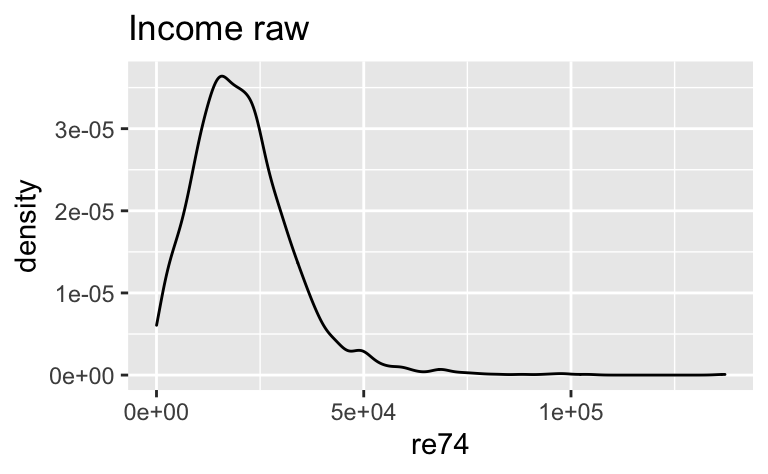
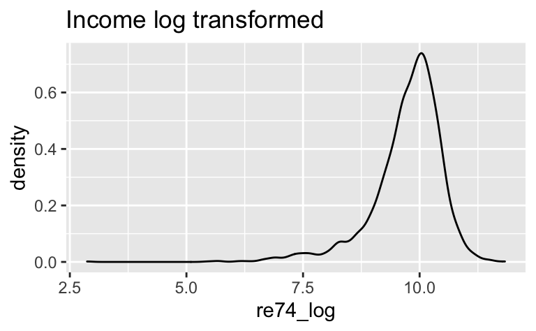

library(tidyverse)
library(easystats)In dieser Aufgabe modellieren wir den (kausalen) Effekt von Schulbildung auf das Einkommen.
Importieren Sie zunächst den Datensatz und verschaffen Sie sich einen Überblick.
d_path <- "https://vincentarelbundock.github.io/Rdatasets/csv/Ecdat/Treatment.csv"
d <- data_read(d_path)Dokumentation und Quellenangaben zum Datensatz finden sich hier.
glimpse(d)## Rows: 2,675
## Columns: 11
## $ V1 <int> 1, 2, 3, 4, 5, 6, 7, 8, 9, 10, 11, 12, 13, 14, 15, 16, 17, 18,…
## $ treat <lgl> TRUE, TRUE, TRUE, TRUE, TRUE, TRUE, TRUE, TRUE, TRUE, TRUE, TR…
## $ age <int> 37, 30, 27, 33, 22, 23, 32, 22, 19, 21, 18, 27, 17, 19, 27, 23…
## $ educ <int> 11, 12, 11, 8, 9, 12, 11, 16, 9, 13, 8, 10, 7, 10, 13, 10, 12,…
## $ ethn <chr> "black", "black", "black", "black", "black", "black", "black",…
## $ married <lgl> TRUE, FALSE, FALSE, FALSE, FALSE, FALSE, FALSE, FALSE, FALSE, …
## $ re74 <dbl> 0, 0, 0, 0, 0, 0, 0, 0, 0, 0, 0, 0, 0, 0, 0, 0, 0, 0, 0, 0, 0,…
## $ re75 <dbl> 0, 0, 0, 0, 0, 0, 0, 0, 0, 0, 0, 0, 0, 0, 0, 0, 0, 0, 0, 0, 0,…
## $ re78 <dbl> 9930.05, 24909.50, 7506.15, 289.79, 4056.49, 0.00, 8472.16, 21…
## $ u74 <lgl> TRUE, TRUE, TRUE, TRUE, TRUE, TRUE, TRUE, TRUE, TRUE, TRUE, TR…
## $ u75 <lgl> TRUE, TRUE, TRUE, TRUE, TRUE, TRUE, TRUE, TRUE, TRUE, TRUE, TR…Modellieren Sie den Effekt der Bildungsdauer auf das Einkommen! Gehen Sie von einem exponenziellen Zusammenhang der beiden Variablen aus. Wie verändert sich die Verteilung der abhängigen Variablen (Y) durch die Logarithmus-Transformation?
Hinweise:
lm zur Modellierung.re74.
d2 <-
d %>%
filter(re74 > 0) %>%
mutate(re74_log = log(re74))m <- lm(re74_log ~ educ, data = d2)ggplot(d2) +
aes(x = re74) +
geom_density() +
labs(title = "Income raw")
ggplot(d2) +
aes(x = re74_log) +
geom_density() +
labs(title = "Income log transformed")
Betrachten wir die deskriptiven Statistiken:
d2 %>%
select(re74, re74_log) %>%
describe_distribution()## Variable | Mean | SD | IQR | Range | Skewness | Kurtosis | n | n_Missing
## ------------------------------------------------------------------------------------------------------
## re74 | 20938.28 | 12631.52 | 15086.30 | [17.63, 1.37e+05] | 1.62 | 6.81 | 2329 | 0
## re74_log | 9.73 | 0.76 | 0.80 | [2.87, 11.83] | -1.67 | 6.01 | 2329 | 0Die Log-Transformation hat in diesem Fall nicht wirklich zu einer Normalisierung der Variablen beigetragen. Aber das war auch nicht unser Ziel.
Categories: